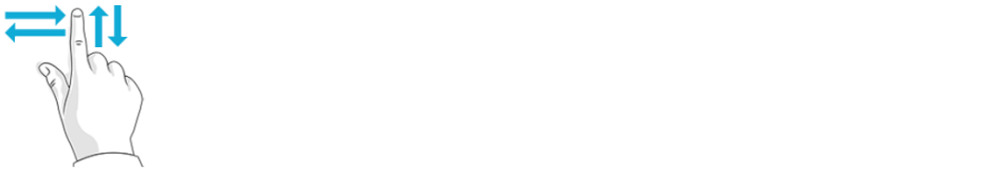

触摸屏界面支持以下 Windows 触摸手势：

| 如何运作 | 使用 |
|---|---|
|
快速轻击该元素一次。 |
被点击的元素被打开、选择或者激活。 该手势等同于点击鼠标左键。 |
| 快速轻击该元素两次。 |
工作 - 生产视图中的切割程序图将重新按照窗口尺寸调节大小。 该手势等同于双击鼠标左键。 |

| 如何运作 | 使用 |
|---|---|
| 在屏幕上某区域拖动手指（向左、向右、向上或向下） |
该手势等同于使用鼠标滚动轮。 |

| 如何运作 | 使用 |
|---|---|
| 使用最少两根手指触摸屏幕或一个元素，并将您的手指向前移动或互相分开。 |
|
| 如何运作 | 使用 |
|---|---|
| 用拇指选择零件并移动食指将其向左或向右旋转。 |
|

当触摸输入字段时，自动显示虚拟键盘。轻击OK将保存您的输入。